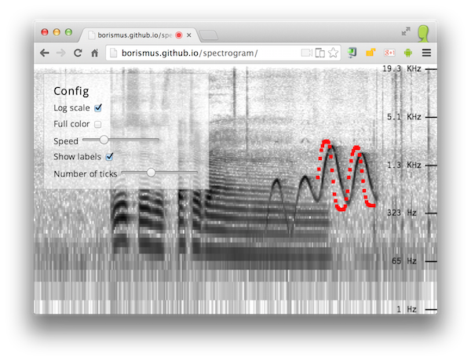
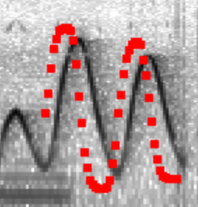

Spectrogram and oscillator
A live-input spectrogram written using Polymer using the Web Audio API.

If you're running Chrome or Firefox, see it in action. Once the spectrogram is running, see if you can make a pattern with your speech or by whistling. You can also click anywhere on the page to turn on the oscillator. For a mind-blowing effect, load this in a parallel tab.
Why?
Having a spectrogram is incredibly handy for a lot of the work I've been doing recently. So a while ago, I built one that satisfies my needs. It runs in a full-screen, using the microphone input as the source.
It also includes an oscillator, which plays a sine wave at the frequency of your pointer. It also shows you the frequency that it plays back, and plots a short buffer of pointer positions. This is handy for measuring internal latency:

Having the oscillator built-in is also pretty fun. You can send morse code (short short short, long long, short short long, short short short), scan for radio stations, make 8-bit character dying sound effects, simulate aliens, ghosts and theremins, and annoy small, annoying dogs.
I use the tool mostly in Chrome, but it also works in Firefox.
Unfortunately no other browser currently has both getUserMedia and Web
Audio API support.
Configuration parameters
The following are HTML attributes of the g-spectrogram component. Many
of them are also configurable via the spectrogram controls component,
which shows up if the controls attribute is set to true.
controls(boolean): shows a config UI component.log(boolean): enables y-log scale (linear by default).speed(number): how many pixels to move past for every frame.labels(boolean): enables y-axis labels.ticks(number): how many y labels to show.color(boolean): turns on color mode (grayscale by default).oscillator(boolean): enables an oscillator overlay component. When you click anywhere in the spectrogram, a sine wave plays corresponding to the frequency you click on.
Using the Polymer component
If you are inclined to embed this component somewhere, you can, since it's implemented in Polymer, which, by the way, is an awesome framework. Once you've gotten started, here's the simplest possible version:
<g-spectrogram/>
Enable controls:
<g-spectrogram controls></g-spectrogram>
Pass parameters to the component:
<g-spectrogram log labels ticks="10"></g-spectrogram>
Future work ideas
It would be great to add a few things to this tool. If you're interested in helping, submit your changes as a pull request on github. Some ideas for things that can be done:
- Improved axis labeling.
- Make it work in mobile browsers.
- Loading/saving of traces.
- Loading audio data from a file.
- Zoom support.
- Higher precision FFT results (would require writing a custom FFT rather than using the one built into Web Audio API.)